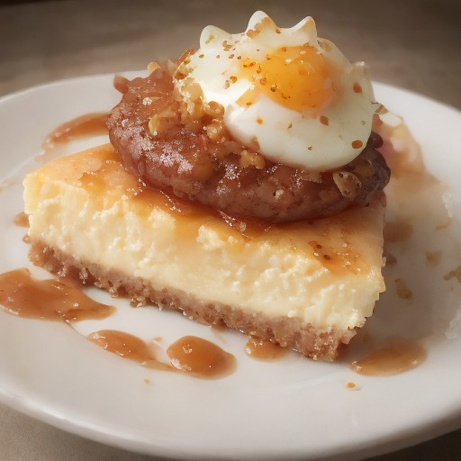

デザート
とろける半熟卵×デミグラスハンバーグ：スパイスチーズケーキ！

とろける半熟卵とデミグラスハンバーグの組み合わせで、悪魔的な甘酸っぱさとスパイスの奥深さを味わえるチーズケーキ！見た目もインパクト大！
💡 こんな時・こんな人におすすめ！
特別な日やパーティーに、インパクトのあるデザートとして最適！
📋 必要な材料（ポストイット風）
材料リスト 1
- 半熟卵2個
- デミグラスハンバーグ1個
- 生クリーム100ml
材料リスト 2
- チーズ100g
- スパイス適量
- お好みで適量
🍳 作り方ステップ
1
1. デミグラスハンバーグを焼いて、半熟卵を焼きます。
2
2. 生クリームとチーズを混ぜて、スパイスを加えて、なめらかになるまで混ぜます。
3
3. 焼いたハンバーグと半熟卵を、スパイスチーズケーキの生地の中に詰め込みます。
4
4. お好みで、ソースや飾りを加えて、完成.